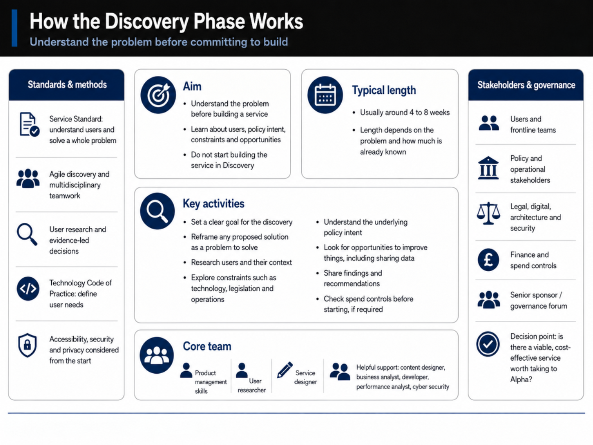
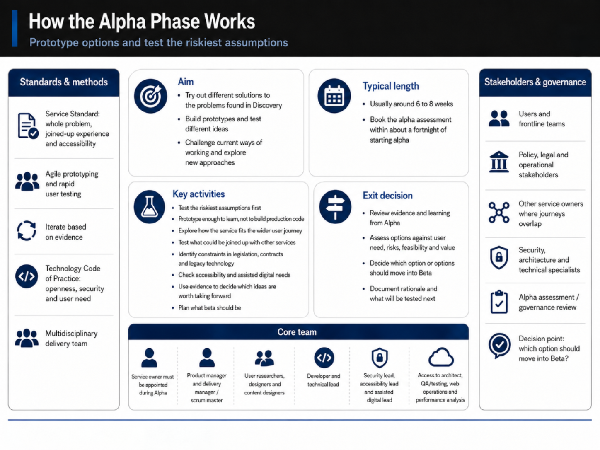
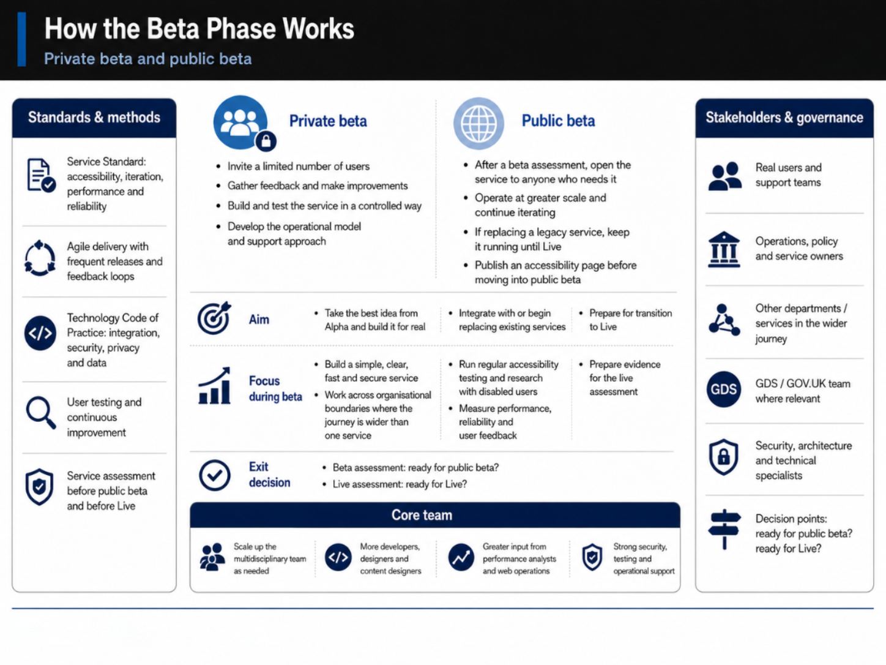
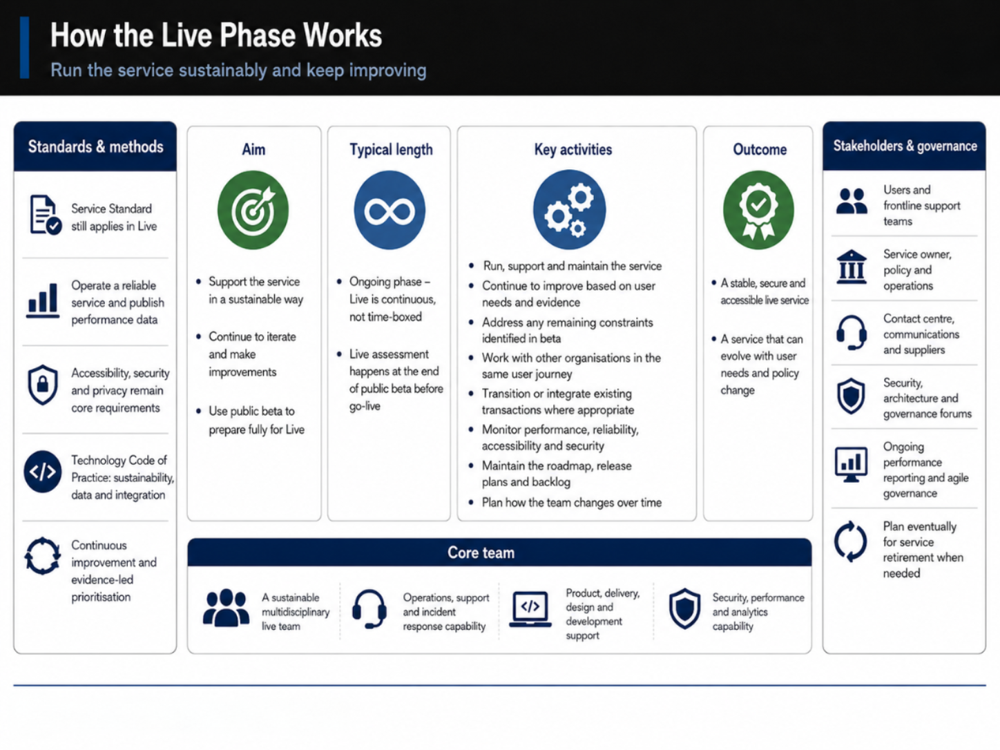

Government Project Lifecycle
Discovery → Alpha → Beta → Live → Retirement. What architecture looks like at every stage of government digital delivery.
UK government digital services follow a phased delivery approach defined by the GDS Service Manual. Each phase has a distinct purpose, and the Solution Architect's role shifts significantly between them. Understanding this lifecycle is fundamental to effective architecture practice in government.
This lifecycle applies to services assessed against the Service Standard. Not every project follows it rigidly, but the principles — start with understanding, test assumptions, build incrementally, iterate based on evidence — apply broadly.
The Five Phases at a Glance
1. Discovery
Understand the problem. Research users. Map the landscape. Don't design yet.
2. Alpha
Test hypotheses. Prototype options. Prove feasibility. Test the riskiest assumptions first.
3. Beta
Build the real service. Test with real users. Iterate based on evidence. Prepare for live.
4. Live
Operate, monitor, and continuously improve. Support the team that inherits it.
5. Retirement
Plan decommissioning. Migrate data. Transition users. Document lessons learned.
Each phase has a service assessment gate. The architect's role shifts significantly between phases — from understanding, to designing, to guiding, to governing.
1 Discovery
Discovery is about understanding the problem before committing to a solution. The goal is to identify user needs, understand the existing landscape, and determine whether building a service is the right approach.
What the Solution Architect does in Discovery:
- Maps the current technology landscape and identifies existing services that might be reused or extended
- Engages with stakeholders to understand constraints — security, data, procurement, timelines
- Identifies high-level architectural risks and dependencies
- Contributes to the decision on whether to proceed to Alpha
- Produces an initial architecture brief — not a design, but a framing of the problem space
Key principle:
Don't design in Discovery. Resist the urge to jump to solutions. Your job is to understand the problem deeply enough that you can make informed decisions in Alpha.

2 Alpha
Alpha is about testing hypotheses and exploring solution options. You build prototypes to test the riskiest assumptions, not to build the final product.
What the Solution Architect does in Alpha:
- Develops and evaluates solution options — typically 2-3 approaches with different trade-offs
- Produces Architecture Decision Records (ADRs) for significant choices
- Designs technical prototypes to test feasibility of key components
- Engages with security, data protection, and accessibility specialists early
- Produces the initial Solution Architecture Document
- Identifies integration points and begins engagement with dependent teams
Key principle:
Test the riskiest assumptions first. If your architecture depends on a particular integration working, prove it in Alpha. Don't leave the hardest problems for Beta.

3 Beta
Beta is about building the real service and testing it with real users. The architecture moves from design to implementation, and the architect's role shifts from designing to guiding and governing.
What the Solution Architect does in Beta:
- Guides the development team on implementing the architecture — available for questions, reviews, and unblocking
- Reviews technical decisions against the architecture principles and ADRs
- Manages architecture changes as requirements evolve based on user feedback
- Ensures non-functional requirements (performance, security, accessibility) are being met
- Prepares for the Live service assessment
- Documents the as-built architecture (which always differs from the as-designed)
Key principle:
The architecture will change. Beta reveals things Alpha couldn't. Good architects adapt the design based on evidence rather than defending the original plan.

4 Live
Live is not the end — it's the beginning of the service's operational life. The architecture must support ongoing operation, monitoring, iteration, and evolution.
What the Solution Architect does in Live:
- Ensures operational readiness — monitoring, alerting, runbooks, and incident response procedures
- Supports the transition from build team to operational team
- Reviews and approves changes that affect the architecture
- Monitors technical debt and plans for remediation
- Evaluates new requirements against the existing architecture
- Plans for scaling, evolution, and eventual retirement
Key principle:
Design for the team that inherits it. The people operating the service in two years probably weren't involved in building it. Clear documentation, sensible patterns, and good observability are essential.

5 Retirement
All services eventually reach end-of-life. Retirement needs to be planned and executed carefully — data must be preserved or migrated, users must be transitioned, and dependencies must be managed.
What the Solution Architect does in Retirement:
- Plans the decommissioning approach — what gets migrated, what gets archived, what gets deleted
- Identifies all dependencies and ensures they're addressed
- Ensures data retention obligations are met
- Manages the transition of users to replacement services
- Documents lessons learned for future projects
Key principle:
Plan for retirement from the start. The best time to think about how a service will be decommissioned is when you're designing it. Data formats, vendor contracts, and integration patterns all affect how easy retirement will be.
Further reading: The GDS Service Manual provides comprehensive guidance on each phase, including what's expected at service assessments.